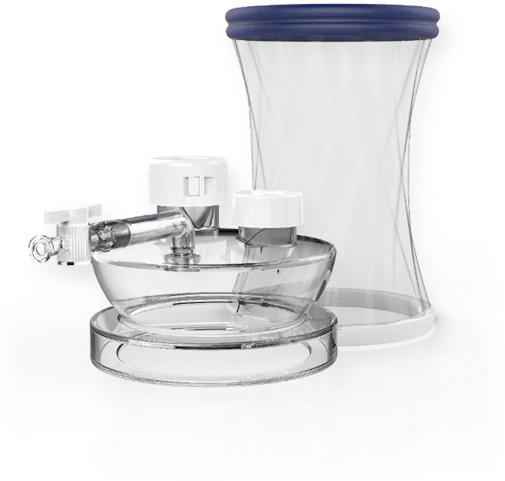

EROP Dual Guard
Dual port type wound protector from EROP, distributed in the Philippines by K-Pick Trading Corp. K-Pick Trading Corp supplies this Korean medical device for hospitals, clinics, surgical teams, resellers, and healthcare procurement officers in the Philippines.

Models and specifications
- DGS-2 / DGS-2X — 5 mm + 12 mm / 12 mm + 12 mm, 135 mm
- DGM-2 / DGM-2X — 5 mm + 12 mm / 12 mm + 12 mm, 135 mm
- DGM-2L / DGM-2LX — 145 mm
Manufactured by EROP (Korea). Distributed in the Philippines by K-Pick Trading Corp, a PH FDA-licensed medical device distributor. See EROP certifications.